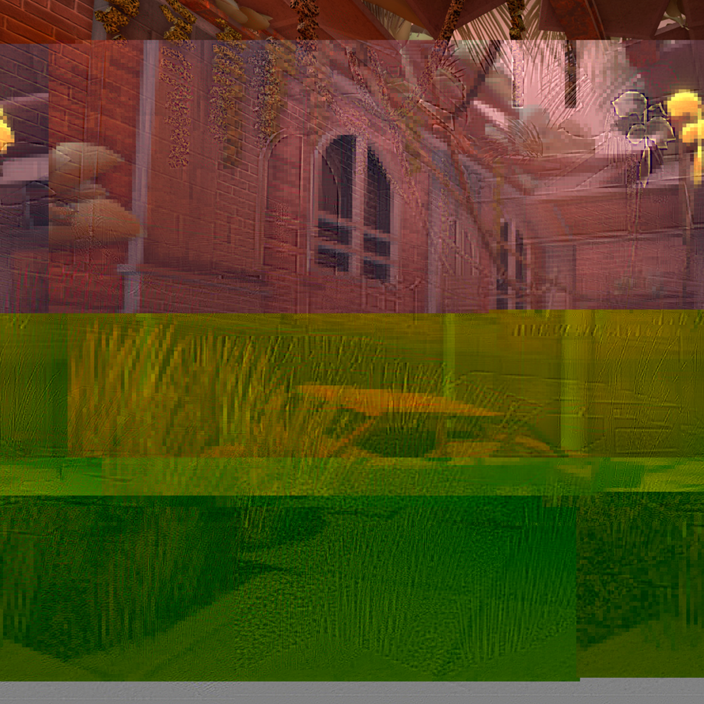
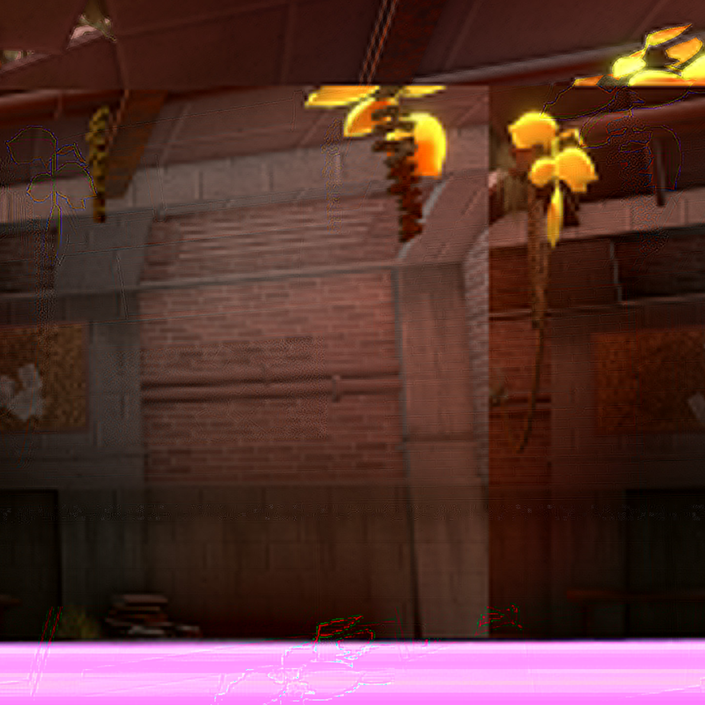

<!DOCTYPE html>
<!-- Latest compiled and minified CSS -->
<link href="https://cdn.jsdelivr.net/npm/bootstrap@5.3.8/dist/css/bootstrap.min.css" rel="stylesheet">

<!-- Latest compiled JavaScript -->
<script src="https://cdn.jsdelivr.net/npm/bootstrap@5.3.8/dist/js/bootstrap.bundle.min.js"></script>
<html>

<nav class="navbar navbar-expand-sm bg-dark navbar-dark justify-content-center">
<div class="container-fluid">
<span class="navbar-text">Navigation</span>

<ul class="navbar-nav">
<li class="nav-item">
<a class="nav-link" href="index.html"><button type="button" class="btn btn-primary">Home</button></a>
</li>
<li class="nav-item">
<a class="nav-link disabled" href="glitch.html"><button type="button" class="btn btn-info">Glitch Art</button></a>
</li>
<li class="nav-item">
<a class="nav-link" href="meme.html"><button type="button" class="btn btn-primary">Meme Mashup</button></a>
</li>
<li class="nav-item">
<a class="nav-link" href="mc.html"><button type="button" class="btn btn-primary">3D Minecraft</button></a>
</li>
<li class="nav-item">
<a class="nav-link" href="net.html"><button type="button" class="btn btn-primary">Net.Art</button></a>
</li>

</ul>

</nav>

</div>
<br>
<div class="container-fluid">
<div class="alert alert-info">
 <center><h1>My Portfolio</h1>
</div>
<center>
<br>  
<br>
<br>This series is intended to be a focus point, using the golden hanging plant as a focal point in each 
<br>of the glitched images while being different points of the specific scenery. Despite using different 
<br>glitching methods, the golden hanging plant still stays as a focal point either it be by color or shape.

<nav class="navbar navbar-expand-sm bg-dark navbar-dark fixed-bottom justify-content-center">
<span class="navbar-text">Created for Art 74</span>
</nav>
</div>
</html>